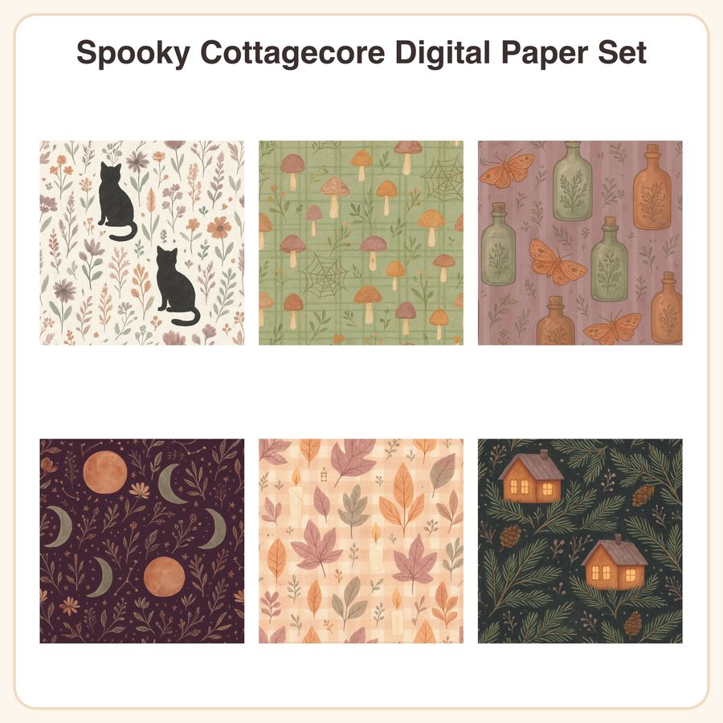

$5.99
View on EtsyFall in love with Halloween all over again \u2014 no gore, just cozy witchy charm! This 6-pattern digital paper pack blends dusty mauve, sage, and pumpkin orange with hand-drawn botanical linework, tiny folk-art motifs, and soft watercolor texture, perfect for cottagecore crafters and Halloween scrapbookers. What's included: i A) 6 seamless patterns, each provided as: i B) 1 high-res JPEG, 3072x3072px (12x12in @ 300dpi) i C) 1 repeatable PNG tile for smaller-scale digital use Patterns included: 1. Dried wildflowers & black cat silhouettes on cream linen texture 2. Tiny mushrooms & spider webs in repeating sage-green plaid 3. Vintage apothecary bottles & moths on muted mauve stripes 4. Harvest moon phases with constellation dots on deep plum 5. Pressed autumn leaves & candle flames on soft pumpkin gingham 6. Cozy cabin windows glowing amid pine branches on charcoal ground File formats & sizes: - 6 JPEGs, 3072x3072px (12x12in, 300dpi), seamless/tileable - 6 repeatable PNG tiles for scaling in design software - All files delivered as an instant digital download (zip folder) How to use: Perfect for scrapbooking, junk journals, card making, planner decor, gift wrap, party printables, fabric/wallpaper mockups, and digital design projects. Simply download, unzip, and use in your favorite design or print software. License: For personal and small-business commercial use (up to 500 finished units sold). Please do not resell, redistribute, or share the digital files themselves. Honest disclosure: These designs were created by our small shop with the help of AI tools, then curated and finalized by hand to fit the collection's cottagecore Halloween theme. No physical product will be shipped \u2014 this is a digital download only.